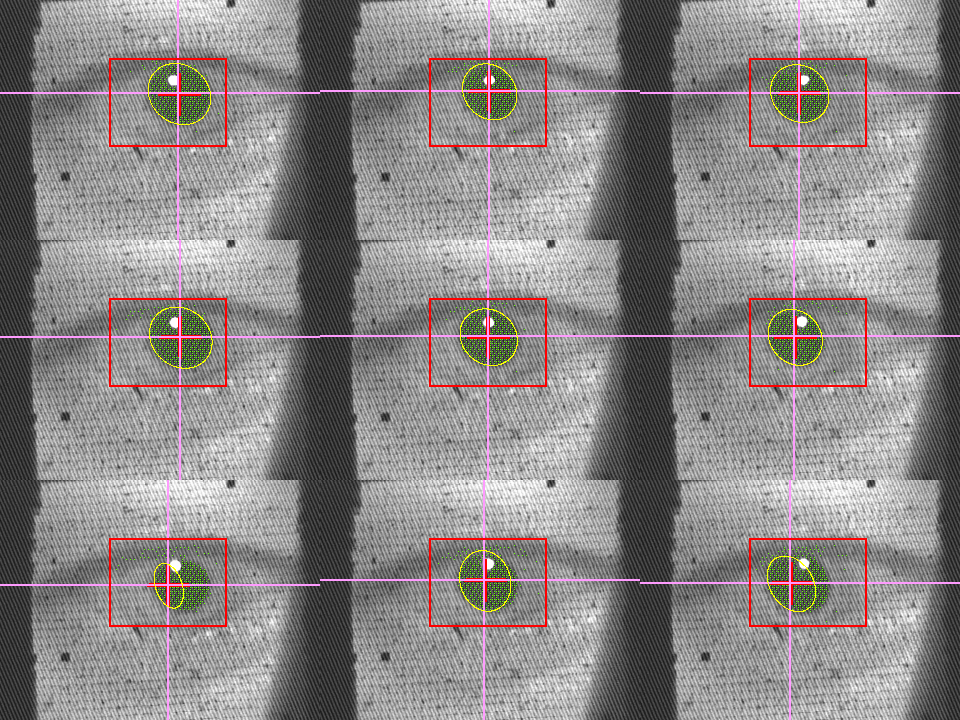

#sources "/Volumes/Hera/Projects/autoeyescore/score_arrington.R" w/correct directory
# provides plot_run
library(dplyr)
ocwd <- getwd()
setwd("/Volumes/Hera/Projects/autoeyescore/")
source('score_arrington.R')
setwd(ocwd)
source("/Volumes/Hera/Projects/Habit/mr/dollarreward/eye_score.R")run1 <- "/Volumes/L/bea_res/Data/Tasks/DollarReward2/MR/11884_20220920/sub-11884_ses-01_task-DR_run-1.txt"
plot_run1 <- plot_run(run1)
plot_run2 <- plot_run(gsub('run-1','run-2',run1))
plot_bad <- plot_run("/Volumes/L/bea_res/Data/Tasks/DollarReward2/MR/11878_20220823/sub-11878_ses-01_task-DR_run-1")
plot_before_ellipse <- plot_run("/Volumes/L/bea_res/Data/Tasks/DollarReward2/MR/11883_20220913/sub-11883_ses-01_task-DR_run-1.txt")Poor tracking for vist visit
Coil too close to pupil (shadow?). pupil detection was very jump: no lock
print(plot_bad)
After changes
applied file:./viewpoint_settings.txt with Load Settings
print(plot_run1)
Tracking before viewpoint mods
On 2022-09-13. before dark background and w/o viewpoint ellipse nor cal save. Decent tracking
print(plot_before_ellipse)